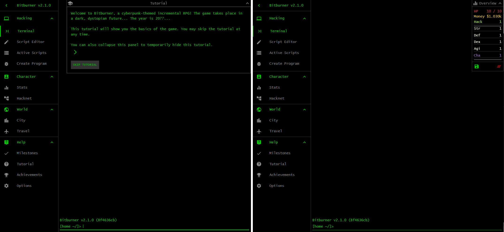
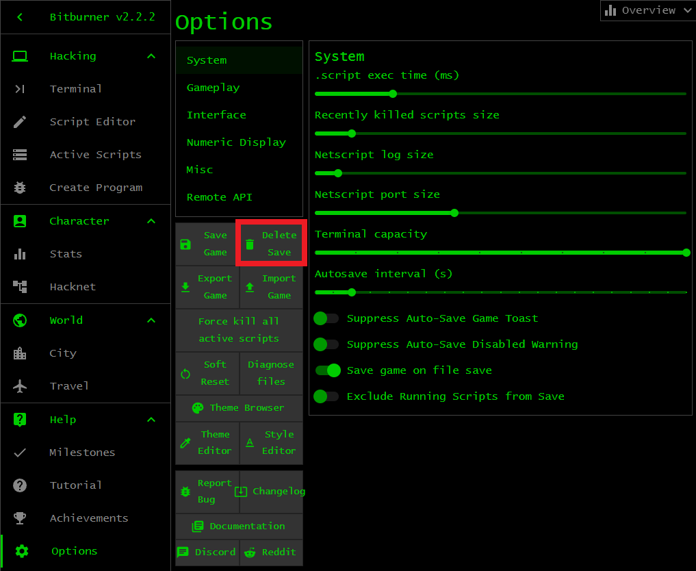

Bitburner
Familiarize yourself with the Bitburner environment. Open the game in
Steam or use the
online version. You should see
something similar to the left panel of the image below. The game places you at
the in-game tutorial. Continue with the tutorial if you want. Otherwise click
the button SKIP TUTORIAL and you should see something like the right
panel of the image below. This is the terminal window of the game. The terminal
window, abbreviated as terminal, is an area of the game that allows you to type
in various commands to play the game. You know you are at the terminal because
the Terminal tab is highlighted green. Spend some time exploring the
other tabs. When you are done, click on the Terminal tab to return to
the terminal. Note the Overview window at the top-right corner. Click on the
arrow to minimize or maximize the window.

Exercises
Exercise 1. Launch Bitburner via Steam or visit the online version. Get to know the interface and what the various tabs have to offer.
Exercise 2. The objective of this exercise is to familiarize yourself with the Bitburner environment. Complete the in-game tutorial. Don't worry if you do not understand everything in the in-game tutorial. You can restart the in-game tutorial by closing your web browser and load the online version of the game again. You might have to delete all browser cookies before loading the online version of the game. Alternatively, the following technique works for both the Steam and online versions of Bitburner. Click on the tab Options and click on the button Delete Save for a hard reset as if you start Bitburner for the very first time. Refer to the image below. The hard reset will delete your save file. Perform a hard reset if you do not care about your save file or you have a backup save file.

Exercise 3. The online tutorial elaborates on the in-game tutorial. Work through the online tutorial for an in-depth introduction to Bitburner.